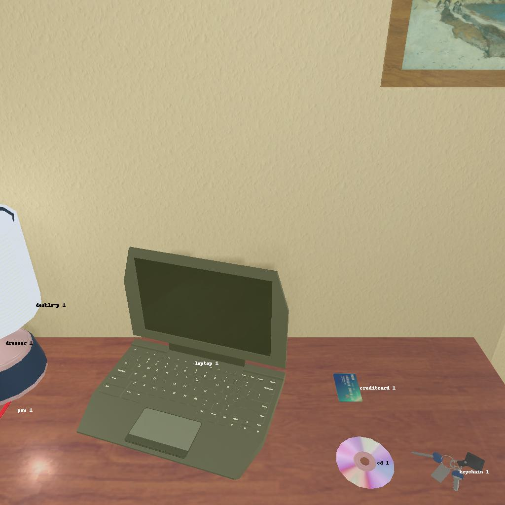
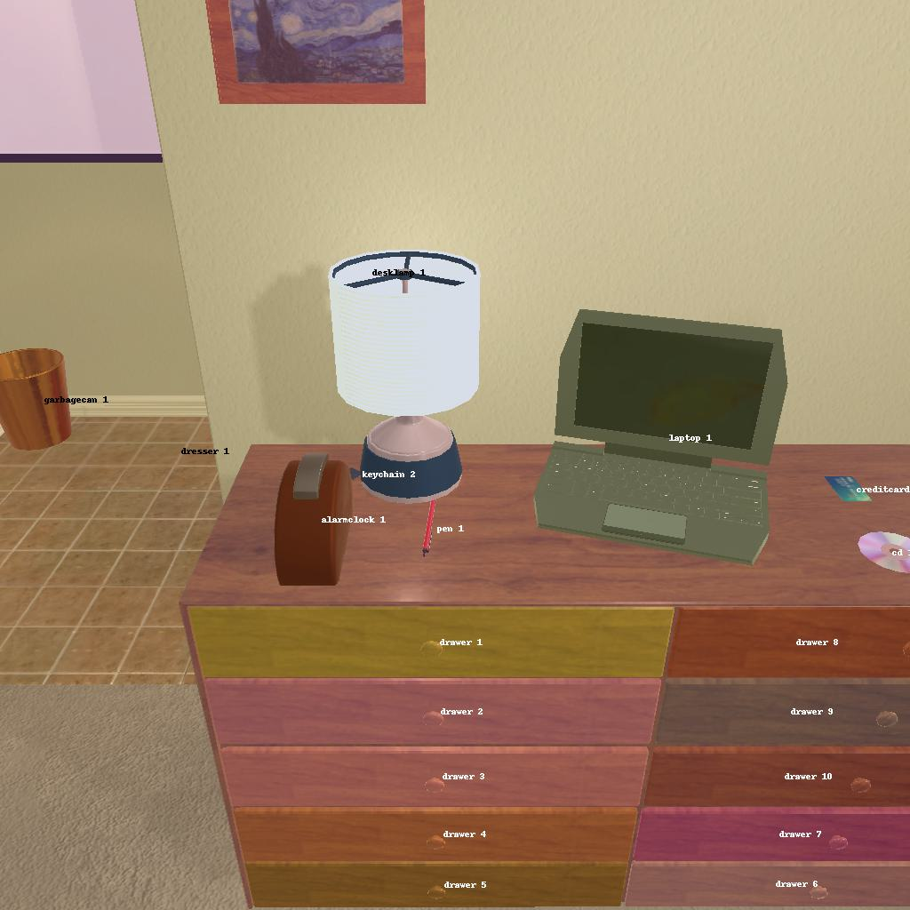

---------------------------------------------------------task: 1---------------------------------------------------------
--------------------------------------------------------------------------------------------------------------------------------------------------------------------
--------------------------------------------------------------------------------------------------------------------------------------------------------------------
Step:--------------------------------------------------------------------------7-------------------------------------------------------------------------------
----------------------------------------
VLM Prompt:
Image1:
Image2:
**Instruction**
1. Analyze the provided image to identify all visible household objects, focusing on those relevant to the task description "examine the alarmclock with the desklamp."
2. Use the analysis of the image and the task hint "The agent must find an object of the desired type, locate and turn on a light source with the desired object in-hand." to answer the question: what is the most reasonable action in the choices for the task description "examine the alarmclock with the desklamp"?
4. Decide and write the answer using the template: The answer is: (i): , where i is the real number. If there is no desired object in the image, search every place based on **Initial Observation** to find the object. And if no one is exactly correct, choose a similar answer.
**Initial Observation**
You are in the middle of a room. Looking quickly around you, you can see bed (1), dresser (1), drawer (1-10), garbagecan (1), shelf (1-7)
**Answer Choices**
(1): go to bed 1
(2): go to drawer 2
(3): go to drawer 3
(4): go to drawer 4
(5): go to drawer 5
(6): go to garbagecan 1
(7): go to drawer 6
(8): go to drawer 7
(9): go to drawer 8
(10): go to drawer 9
(11): go to drawer 10
(12): go to shelf 1
(13): go to shelf 2
(14): go to shelf 3
(15): go to shelf 4
(16): go to shelf 5
(17): go to shelf 6
(18): go to shelf 7
(19): open drawer 1
(20): close drawer 1
(21): examine drawer 1
**Answer**
Let's think step by step by following the instructions.
----------------------------------------
----------------------------------------
Original Response:
The task is to "examine the alarmclock with the desklamp." From the images provided, we can identify the following relevant objects:
- Image 1: desk lamp labeled as "desklamp 1" and alarm clock is not visible.
- Image 2: desk lamp labeled as "desklamp 2" and alarm clock labeled as "alarmclock 1."
The task hint suggests that the agent must find the alarm clock, locate and turn on a light source (desk lamp) with the alarm clock in hand to examine it. From the initial observation, we know we are in the middle of a room with several drawers, a garbage can, and shelves, but the alarm clock is already visible in Image 2 on top of the dresser.
The most reasonable action to fulfill the task description is to go to the alarm clock and use the desk lamp to examine it. Since the alarm clock is on the dresser and the desk lamp is right next to it, the agent does not need to search any drawers or shelves. Therefore, none of the answer choices involving going to a different location or opening/closing drawers are correct.
However, there is no option to turn on the desk lamp or examine the alarm clock directly. The closest action from the provided choices that aligns with the task description would be to go to the dresser where both the alarm clock and the desk lamp are located.
The answer is: (1): go to dresser 1.
----------------------------------------
----------------------------------------
>>> Refine Original VLM Response and Get Pure Action: go to dresser 1
----------------------------------------
-----------------------------------------------------------------
Running time: 21.702828407287598 seconds
Total Money: 0.44154
-----------------------------------------------------------------
-----------------------------------------------------------------
Text Observation:You arrive at loc 1. On the dresser 1, you see a laptop 1, a desklamp 1, a cd 1, a keychain 1, a creditcard 1, and a pen 1.
-----------------------------------------------------------------
UNSUCCEED